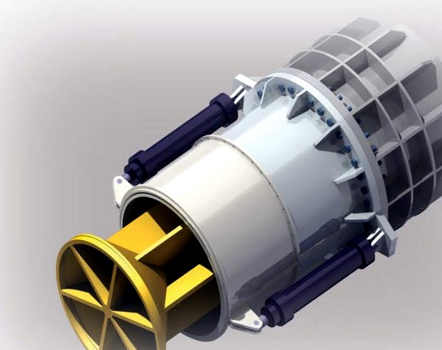
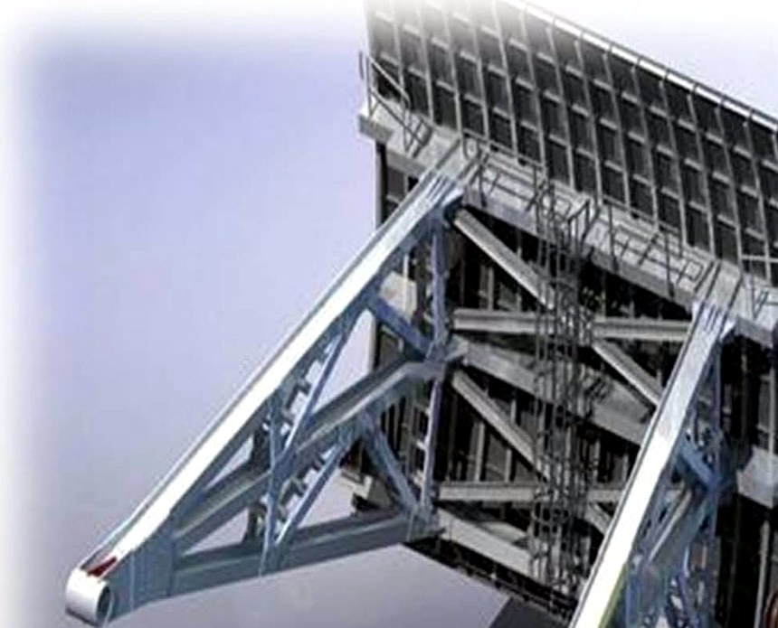
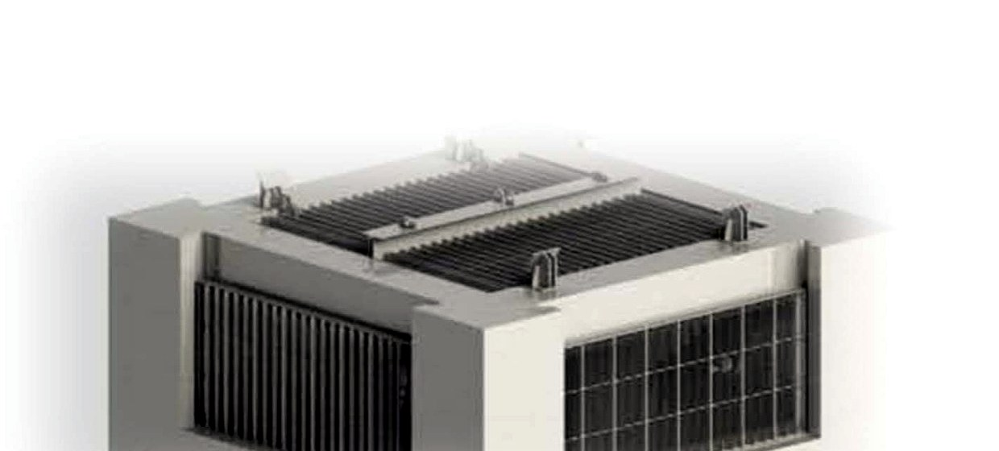
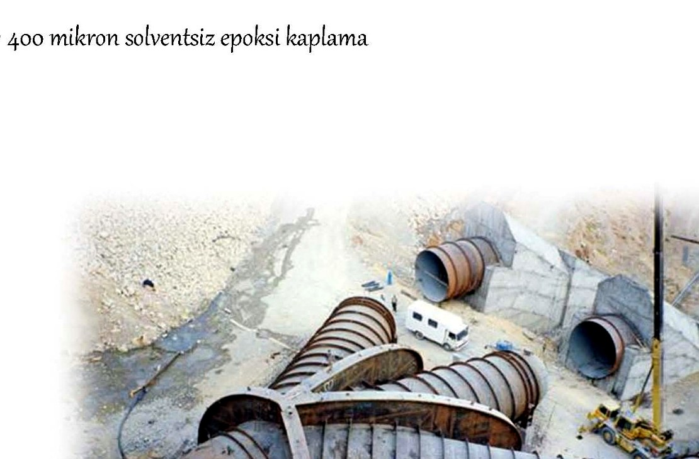
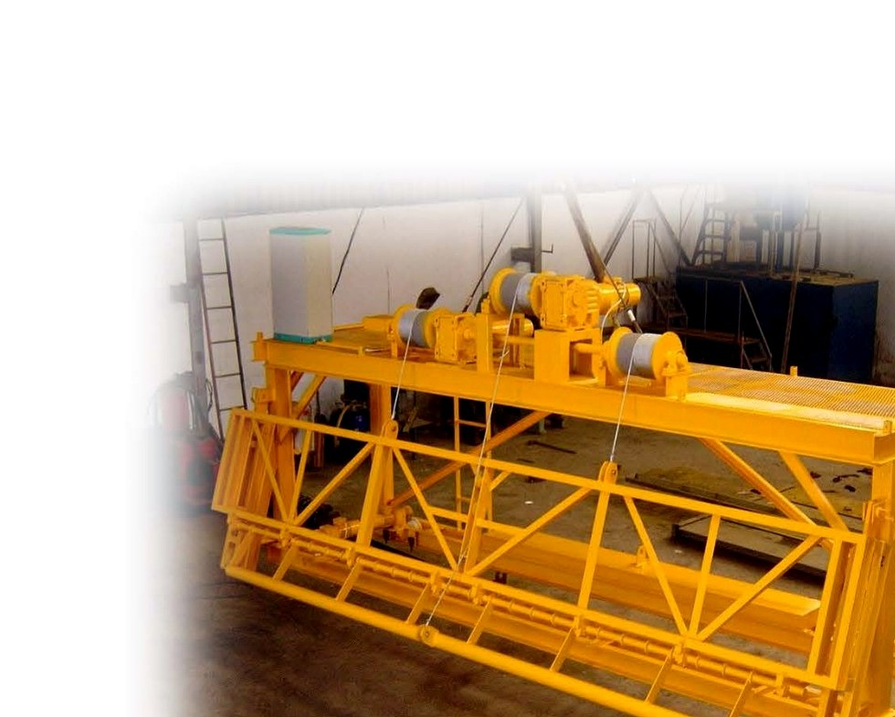
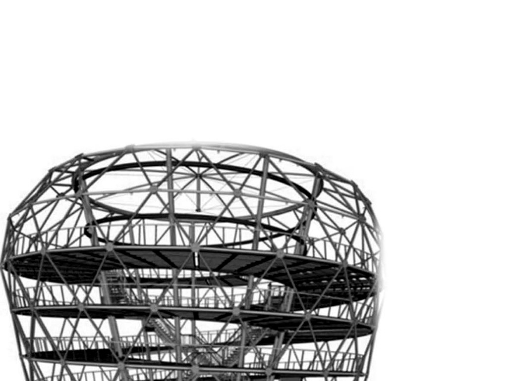
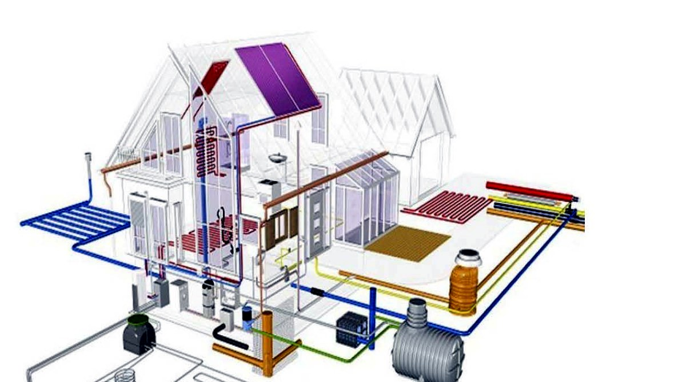

PAMA Proje Mühendislik İnşaat
Su yapıları ve mekanik sistemlerde ultra premium mühendislik deneyimi.
Hidromekanik teçhizat, baraj ve HES ekipmanları, mekanik tesisat, çelik konstrüksiyon, imalat, montaj ve devreye alma süreçlerini tek bir mühendislik omurgasında birleştiriyoruz.
DSİşartname disiplini
400mikron kaplama opsiyonu
%100kontrollü montaj yaklaşımı
Hidromekanik teçhizat
Baraj kapakları
Kelebek ve konik vanalar
Çelik konstrüksiyon
Pompa istasyonları
Mekanik tesisat
Atık su ve temiz su tesisleri
İmalat + montaj + devreye alma
Kurumsal güç
PAMA, mühendislik kararlarını saha gerçekliğiyle buluşturan yüksek disiplinli bir proje partneridir.
Altyapı ve üst yapı mekanik tesisatları, baraj hidromekanik teçhizatları, atık su ve temiz su arıtma tesisleri, pompa istasyonları, çelik imalat, montaj ve işletmeye alma süreçlerinde müşterilerine uçtan uca çözüm üretir.
Hizmetlerimiz
Projeyi yalnızca üretmeyiz; mühendislik standartlarına göre kurgular, sahada sonuçlandırırız.
01
Baraj, HES ve regülatör ekipmanları
Kapaklar, borular, vanalar, ayrım yapıları ve türbin salyangozları için proje, imalat ve montaj.
- DSİ şartnamesine uygun üretim
- Elektrik, hidrolik ve manuel kumanda
- Korozyon koruma ve epoksi kaplama
02
Üst yapı mekanik tesisatları
Konut, ticari, AVM, hastane ve endüstriyel projelerde mekanik tesisat sistemleri.
- Havalandırma kanalı imalat ve montajı
- Yangın, ısıtma ve sıhhi tesisat
- Devreye alma ve işletmeye hazırlık
03
Arıtma tesisleri ve pompa istasyonları
Atık su, içme suyu ve endüstriyel arıtma tesislerinde mekanik ekipman ve saha çözümleri.
- Hat vanaları ve branşman yapıları
- Pompa istasyonları mekanik işleri
- İşletme basıncına göre dizayn
04
Bakım, revizyon ve saha destek
Hidromekanik teçhizat, vinç, havalandırma, elektrik ve hidrolik sistemlerde bakım ve onarım.
- Vana ve kapak revizyonları
- Redüktör ve kaldırma mili bakımı
- Saha arıza analizi ve iyileştirme
Mühendislik yanı güçlü
Her ekipman için tasarım, malzeme, üretim ve saha montajı aynı kalite zincirinde yönetilir.
PAMA yaklaşımı; işletme basıncı, suyla temas eden yüzeyler, kumanda sistemi, sızdırmazlık geometrisi, kaplama kalınlığı, kaynak metodu ve montaj risklerini proje başında birlikte ele alır.
İşletme basıncına göre proje dizayn
Çelik konstrüksiyon imalat
Paslanmaz çelik ve bronz sızdırmazlık yüzeyleri
Solventsiz epoksi kaplama seçenekleri
Opsiyonel elektrik pano kontrol kumandası
İşletmeye alma ve bakım senaryosu
Premium Engineering Stack
Design → Fabrication → Field Assembly
Teknik ofis ve saha ekiplerinin aynı veriyle çalıştığı, izlenebilir ve yüksek güvenilirlikli süreç.
Yetkinlik matrisi
Hidromekanik ekipmanlardan çelik yapılara kadar geniş ve derin çözüm portföyü.
Karesel sürgülü ve kelebek vanalar
Basınca göre dizayn, çelik konstrüksiyon, paslanmaz yüzey ve farklı kumanda seçenekleri.

Konik vanalar
Gövde sızdırmazlık elemanları, paslanmaz yüzeyler ve elektrik/hidrolik kumanda seçenekleri.

Radyal ve batardo kapakları
Virgül kauçuk conta, suyla temas eden yüzeylerde yüksek dayanımlı epoksi kaplama.

Su alma ızgaraları
İşletmeye göre dizayn, çelik konstrüksiyon imalat ve yüksek dayanımlı kaplama.

Ayrım yapıları ve cebri boru
Branşman, pantolon yapılar, çelik boru imalatı ve kontrollü saha montajı.
Portal, köprü ve monoray vinçler
Şartnameye uygun proje dizayn, çelik konstrüksiyon imalat ve saha kurulum desteği.

Izgara temizleme makineleri
Su alma ve arıtma tesislerinde operasyon sürekliliği için özel ekipman çözümleri.

Çelik konstrüksiyon yapılar
Proje dizayn, imalat ve kontrollü montaj süreçleriyle yüksek dayanımlı çelik yapılar.

Mekanik tesisat grubu
Havalandırma, yangın, ısıtma ve sıhhi tesisat sistemlerinin imalat, montaj ve devreye alınması.
Süreç modeli
Net aşamalar, ölçülebilir kalite, güçlü saha koordinasyonu.
Keşif ve analiz
İşletme koşulları, basınç değerleri, saha erişimi ve montaj riskleri incelenir.
Proje dizayn
Şartname, malzeme, sızdırmazlık, kumanda ve kaplama sistemi birlikte kurgulanır.
İmalat
Çelik konstrüksiyon, kaynak, işleme ve kaplama adımları kalite kontrolle yürütülür.
Montaj
Saha planı, kaldırma ekipmanı, hizalama ve test adımları kontrollü uygulanır.
Devreye alma
Sızdırmazlık, kumanda, hareket ve işletme testleri tamamlanarak teslimat yapılır.
Referans yaklaşımı
Su, enerji, hastane, arıtma ve isale hattı projelerinde saha deneyimi.
Sunumdaki referans başlıkları PAMA web kimliğiyle premium ve okunabilir bir yapıya dönüştürüldü. Liste yapısı müşteriye yalnızca iş adını değil, çözüm kapsamını da gösterir.
Projeniz için görüşelim| Proje | Lokasyon | Kapsam |
|---|---|---|
| Manisa Gördes Atıksu Tesisi | Manisa | Hidromekanik imalat ve montaj |
| Karakuyu ve İlyaslı Gölet Sulamaları | Uşak | Hidromekanik imalat ve montaj |
| Kızılgöl Göleti ve Sulaması | Afyon | Hidromekanik imalat ve montaj |
| Samsun 900 Yataklı Hastane İnşaatı | Samsun | Havalandırma kanalı imalatı |
| Çubuk Akyurt Arası İsale Hattı | Ankara | Çelik boru montajı ve pompa istasyonu |
| Karacaören 2 İletim Hattı | Antalya | ST44 çelik boru montajı |
Ekipman gücü
Saha montajı ve imalat kapasitesini destekleyen operasyon altyapısı.
75 tonluk lastikli vinçHidrokon · 1 adet
100 tonluk paletli vinçHitachi · 3 adet
Jeneratör grubu110 / 75 / 50 / 15 KVA
Pick-up 4x4 ve minibüsSaha mobilizasyonu
Çelik boru montaj ekipmanı6 set
Magmaweld kaynak makineleri400A ve 500A gazaltı
01
Şartnameye uygunluk
DSİ şartnamesi, işletme basıncı, yüzey koruma ve kumanda gereklilikleri proje başlangıcında netleştirilir.
02
Malzeme ve kaplama disiplini
Suyla temas eden yüzeylerde yüksek dayanımlı kaplama; özel yüzeylerde paslanmaz ve bronz çözümler.
03
Saha testi ve devreye alma
Montaj sonrası kumanda, hareket, sızdırmazlık ve işletme senaryoları kontrol edilerek teslimat yapılır.
İletişim
Projeniz için mühendislik ekibiyle premium bir başlangıç yapın.
Teknik şartname, keşif notu, metraj, çizim veya yalnızca ilk fikir aşamasındaki ihtiyaçlarınız için PAMA ekibiyle hızlı bir ön değerlendirme başlatın.
Telefon0312 750 04 61
E-postainfo@pama.com.tr
Adres
Büyükesat Mah. Koza 1 Cad. Sev Apt. No:153/4
Çankaya / Ankara
Çankaya / Ankara